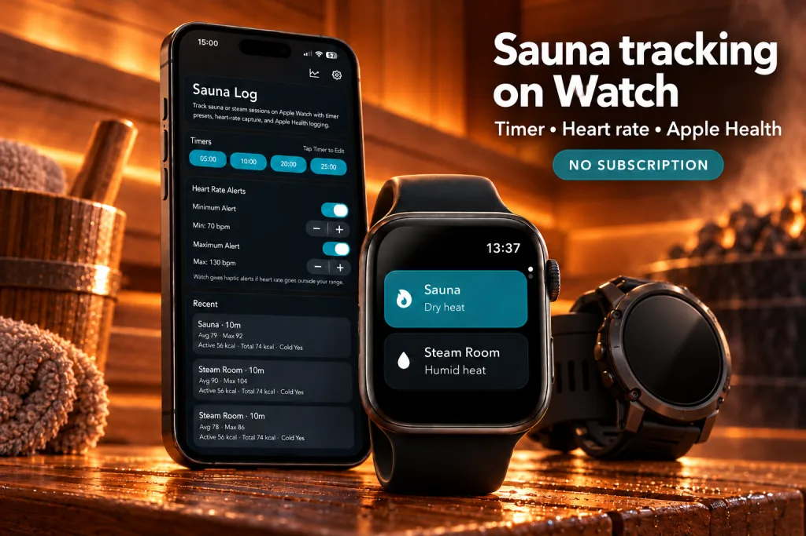

Start heat from your wrist.
Choose sauna or steam room, set the timer and keep the essential session state visible on a Garmin watch.
Time your sauna or steam session from your Garmin watch. Keep your settings and session history together on iPhone.
Install both apps. Requires iPhone and a compatible Garmin watch. Check compatible watches in Connect IQ.

Choose sauna or steam room, set the timer and keep the essential session state visible on a Garmin watch.
The Garmin companion uses a compact layout suited to the round watches that make up much of the Garmin range.
Use the iPhone app for timer defaults, pairing, purchase state and session history. Switch between Apple Watch and Garmin as your setup changes.
Install the Sauna Log companion on a compatible Garmin watch and connect it from the iPhone app.
Select Sauna or Steam Room and use your saved timer defaults.
Complete the session on your watch, then return to iPhone for the saved record and longer-term insights.
Your sessions on Garmin. Your history on iPhone.
Compatibility varies by Garmin model. Check the supported devices in Garmin Connect IQ and follow the in-app pairing instructions.